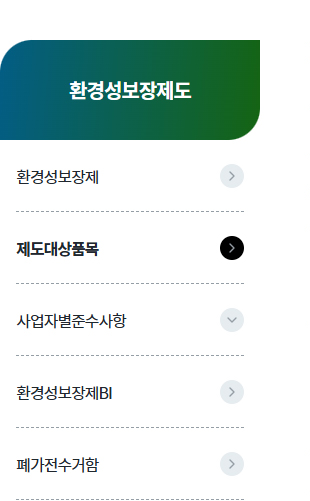

| 제품군 | 대상 제품 |
|---|---|
| 1. 특정 재활용 대상 제품 | 가. 냉장고, 에어컨 등 냉매를 포함하는 기기 |
| 나. 세탁기, 러닝머신, 전기안마기 | |
| 2. 일반 재활용 대상 제품 | 가. 디스플레이기기 (100㎠ 이상의 화면을 포함하는 기기만 해당) |
| 나. 이동전화단말기 | |
| 다. 통신·사무기기 | |
| 라. 그 밖의 일반 전기 · 전자제품 | |
| 3. 태양광 패널 | 태양광 패널 |
| 제외 대상 | 관련 규정 | |
|---|---|---|
| 1. 운송수단 등 |
자동차 원동기장치자전거 |
「도로교통법」 제2조제21호 ※개인형 이동장치는 의무대상임(「도로교통법」제2조제19호의2) |
| 철도 | 「철도산업발전기본법」 제3조제1호 | |
| 도시철도 | 「도시철도법」 제2조제2호 | |
| 궤도 | 「궤도운송법」 제2조제1호 | |
| 선박 | 「해사안전기본법」 제3조제2호 | |
| 항공기 | 「항공안전법」 제2조제1호 | |
| 우주비행체 | 「항공우주산업개발 촉진법」 제2조제3호 | |
| 2. 군수품 | 군수품 | 「군수품관리법」 |
| 국가 안보 목적 | 기후에너지환경부 고시(제2025-68호) ① | |
| 3. 산업기기 및 대형고정설비 | 기후에너지환경부 고시(제2025-68호) ② | |
| 3. 의료기기 | 기후에너지환경부 고시(제2025-68호) ③ | |
| 5. 전지류 및 조명제품 | 「자원재활용법」 시행령 제18조제4호(전지류), 제7호(형광등, LED조명) | |
| 6. 기타 | 기후에너지환경부 고시(제2025-68호) ④ | |
| 7. 부속품ㆍ부분품 |
상기 1~6호 해당하는 제품의 제조 단계에서 장착되도록 설계된 것으로서 해당 제품의 일부로만 기능할 수 있는 부속품ㆍ부분품에 해당하는 전기ㆍ전자제품 |
|
| 제외 대상 | 관련 근거 |
|---|---|
| 전비품(戰備品) | 「군수품관리법」 제3조 및 같은 법 시행령 제1조의2제1항 |
| 국가 안보 목적 |
「행정기관의 조직 및 정원에 관한 통칙」 제2조제1호부터 제3호의 규정에 따른 행정기관에서 사용 |
| 제외 대상 | 관련 근거 |
|---|---|
|
여러 종류의 기구나 장치를 서로 조립 또는 결합하여 하나의 기기나 설비로 제작
|
|
|
대형기기·설비를 조립, 설치 및 해체하기 위해서는 관련 전문가의 작업이 필요
|
|
|
일정한 공간에 고정적으로 설치하여 사용
|
|
|
대형고정설비의 경우 동일 하게 제작된 특수기기로만 교체가 가능한 경우
|
|
|
기업간 거래
(B2B)인 경우 |
|
| 기기류 | 관련 내용 |
|---|---|
|
기계설비
|
「기계설비법」 제2조제1호 및 같은 법 시행령 제2조 ※ 다만, 에어컨디셔너(벽걸이, 스탠드형), 공기청정기는 의무대상제품에 해당(제외되지않음) |
|
전기설비
|
「전기공사업법」 제2조제1호 및 같은 법 시행령 제2조제2항에 따른 전기공사 |
|
소방시설
|
「소방시설 설치 및 관리에 관한 법률」 제2조제1항제1호 및 같은 법 시행령 제3조 |
|
정보통신설비
|
「정보통신공사업법」 제2조제2호 및 같은 법 시행령 제2조제1항에 따른 정보통신설비의 설치 및 유지ㆍ보수 및 부대공사로 설치 |
| 전기ㆍ전자제품(업종) | 관련 내용 |
|---|---|
|
건설기계(건설업)
|
「건설기계관리법」 제2조제1항제1호 및 같은 법 시행령 제2조 |
|
농업기계(농업)
|
「농업기계화 촉진법」 제2조제1호 및 같은 법 시행규칙 제1조의2 |
|
제조설비(제조업)
|
유해위험방지계획서 제출 대상 기계ㆍ기구 및 설비 - 「산업안전보건법」 제42조제1항제1호 및 같은 법 시행령 제42조제2항 |
| 안전인증대상 기계 - 「산업안전보건법」 제84조제1항 및 동법 시행령 제74조 | |
| 자율안전확인대상 기계 - 「산업안전보건법」 제89조제1항 및 동법 시행령 제77조 | |
| 공장등록대장의 기계장치 - 「산업접적법」 제16조제1항 및 같은법 시행규칙 제10조제1항 | |
|
방사선발생장치
|
「원자력안전법」제2조제9호 |
|
전문적인 용도로 작업장 내에서만 사용되는 비도로용 이동기계
|
|
| 의료기기 | 관련 근거 |
|---|---|
| 생물학적 안전에 관한 자료 제출 대상 | 「의료기기 허가ㆍ신고ㆍ심사 등에 관한 규정(식품의약품안전처고시)」 제26조제1항제4호나목 |
|
3등급(중증도의 잠재적 위해성) 4등급(고도의 위해성) |
「의료기기 품목 및 품목별 등급에 관한 규정(식품의약품안전처고시)」, 「체외진단형 의료기기품목 및 품목별 등급에 관한 규정(식품의약품안전처고시)」 |